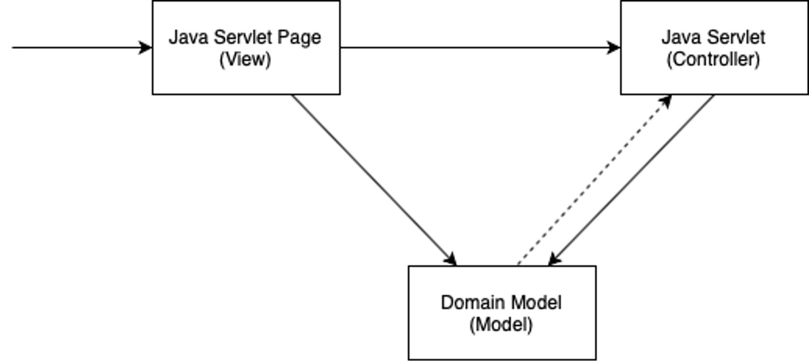
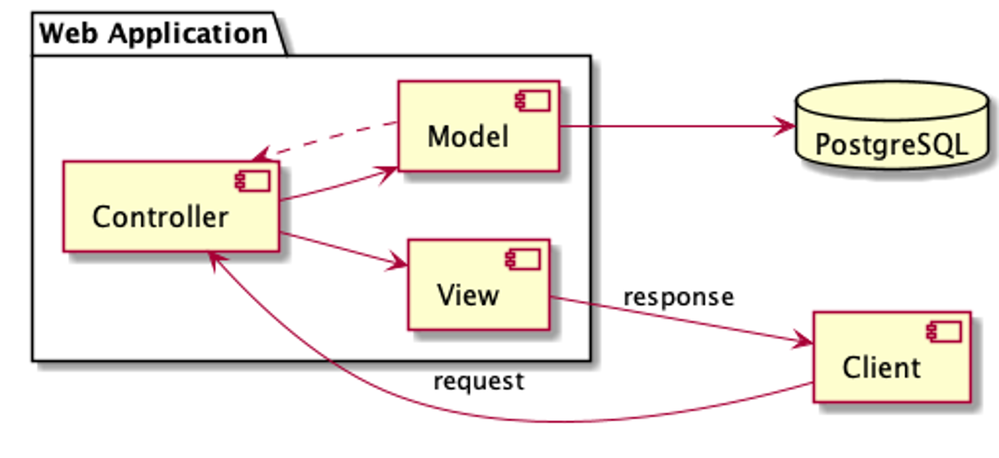

Workshop 3#
This workshop introduces the key components that form the technology stack taught in this subject. This introduction will be brief, after this workshop you should make sure to work through one of the two guides - on either JSP or React - which cover, in great detail, how to set up a development environment.
Docker#
The first technology we’ll take a look at is Docker. Docker has been around a long while now assisting developers develop and deploy large distributed systems of ever increasing complexity. Docker is a containerisation solution, it provides a way for us to build a version of our software that we can run anywhere. Java developers will find this concept familiar - after all, Java is marketed as a solution in which teams “build [their software] once, [and] run [it] anywhere”. Docker works in much the same way, it provides a virtual environment - called a container - in which an application can run. However, unlike the Java Virtual Machine (JVM), Docker is not limited to running Java applications, it can build and run a portable version of any software (more, or less - there are, of course, limitations to all solutions 😙). From simple one-off shell scripts to fully fledged servers with a persistent presence, Docker is able to easily build a portable solution, which you can deploy to any environment that’s also running Docker. In this workshop we’ll use Docker to deploy a local version of a PostgreSQL database and administrative UI without ever having to install them.
Docker Desktop is a handy UI for Docker that ships with the latest Docker CLI and daemon, install it here. Once installed, you’ll need to launch Docker Desktop, which will, in turn, launch Docker services such as the Docker Daemon. Verify your installation by running the hello-world image:
docker run hello-world
The previous command should run a container that prints - amongst other things - Hello from Docker! to the console.
Images
Docker images are essentially binaries, libraries and files packaged in such a way that Docker can run them as a container
PostgreSQL#
PostgreSQL is widely considered the ‘Swiss Army Knife’ of databases because it’s both reliable and packed full of features. At its core PostegreSQL is a Relational Database Management System, and that’s how we will be using it in this subject, but PostgreSQL is capable of much more; it can be used as a document store in much the same way MongoDB is, a message broker, or a graph database, and has extensions for handling time-series data, full-text search, and even Machine Learning analytics.
Using Docker, let’s deploy a PostgreSQL database to our local system:
docker run --rm --name postgres -d -p 5432:5432 -e POSTGRES_PASSWORD=password -v ./data:/var/lib/postgresql/data postgres:15
The command above starts a Docker container with a containerised PostgreSQL database. The --rm flag instructs Docker to remove the container once it is stopped, which will be handy later. The --name parameter sets the name of our container to postgres, which will also be handy later 😀. The -d flag starts the container in detached mode, which simply means that Docker will not attach our shell to the stdout (standard output) of the container, allowing us to run the container in the background and continue working in our current shell. The -p parameter maps our host machine’s port 5432 to the container’s internal port 5432 (which is the port that PostgreSQL is configured to listen on by default), allowing us to access the PostgreSQL process at localhost:5432. The -e parameter sets the POSTGRES_PASSWORD environment variable, which PostgreSQL uses to set the password for the default postgres user and database. Finally, the -v parameter instructs Docker to create a volume at ./data on our host machine and mount this to /var/lib/postgresql/data in the container (where PostgreSQL persists its data), ensuring that any changes we make to the database are preserved even when we stop the container.
DockerHub
Note that the Docker image we are using is the official PostgreSQL supported image, you can learn more about this image and its usage on DockerHub here.
PostgreSQL ships with a CLI tool, psql, for managing PostgreSQL databases. We’ll use psql to verify the PostgreSQL database we deployed with Docker is working as it should. You can install this tool if you like, or simply use Docker to run a containerised version of psql without the need to install psql at all (just as we did earlier when deploying the PostgreSQL database itself). We’ll demonstrate the latter approach; but to do so, we first need to understand a little about how Docker manages networking between containers. For two Docker containers to interact with each other they need to be assigned to the same network, by default Docker neither creates any networks nor assigns containers to networks. If we are going to use Docker to run psql then we need to explicitly instruct Docker to create a network to which it can connect both our PostgreSQL and psql containers.
Let’s create a network now:
docker network create workshop-3
We can then connect the running PostgreSQL container to our new network:
docker network connect workshop-3 postgres
Finally, we can run psql in a container that can connect to our PostgreSQL database:
docker run -it --rm --network workshop-3 postgres:15 sh -c "exec psql -h postgres -U postgres"
The command above introduces a few new concepts. The -it flags start the container in interactive mode, which means that Docker will attach our shell to the container and we’ll be able to both receive the container output and send our own input (Docker will forward our commands to the containerised psql program). The --network parameter connects the container to the workshop-3 network on startup. Finally, sh -c "exec psql -h postgres -U postgres" instructs Docker to override the default entrypoint for the postgres:15 image (which would simply start the database) and instead start psql in a shell, note that here psql is started with the -h parameter set to postgres which is the name of the PostgreSQL database container started earlier (Docker maintains its own DNS, and assigns a hostname to each container equal to the container’s name - which we set earlier via the --name parameter).
After running the above command you should find yourself within the psql CLI, connected to the PostgreSQL database. psql should prompt you for a password, simply enter password. Then execute \l to list the databases, there should just be one, postgres. Finally execute \q to quit.
Congratulations, you’ve just deployed a PostgreSQL database, and administered this database with psql - without ever having to install PostgreSQL or psql. Hopefully you can see how easy it is to deploy software with Docker; if you wish, you can deploy all kinds of useful systems in this way - other databases such as MongoDB, message brokers such as RabbitMQ, monitoring tools such as Prometheus, and the majority of other modern software development tools all have well supported Docker images available.
There is one other tool that is very useful when developing with PostgreSQL, pgAdmin. Much like psql, pgAdmin is a management tool for PostgreSQL databases; unlike psql, pgAdmin is a web application with a neat graphical UI that makes administering a PostgreSQL database both intuitive and easy. Let’s deploy pgAdmin with Docker, and in the process introduce Docker Compose.
Like PostgreSQL itself, pgAdmin has a well supported Docker image, you can find out more about it here. This image is easy to deploy using docker run, but you might be starting to realize that running multiple containers and having to configure their networking can be a little tedious using the Docker CLI. Docker Compose provides a way to define multi-container applications as a single easy to maintain (and share) file, and is particularly handy when developing distributed systems comprised of many interacting processes. Save the following Docker Compose configuration in a file called docker-compose.yaml:
services:
postgres:
image: postgres:15
environment:
POSTGRES_PASSWORD: password
ports:
- '5432:5432'
volumes:
- ./data:/var/lib/postgresql/data
networks:
- internal
pgadmin:
image: dpage/pgadmin4
environment:
PGADMIN_DEFAULT_EMAIL: admin@pgadmin.com
PGADMIN_DEFAULT_PASSWORD: password
ports:
- '8081:80'
networks:
- internal
networks:
internal: {}
Notice that the file above declares a service postgres, which defines a PostgreSQL database, as well as a pgadmin service, and a network to connect them both. Starting the networks and services defined in this file is a one step process:
docker compose up -d
You should now notice that two containers are now running, one for the PostgreSQL database and another for pgAdmin. Open a browser and navigate to http://localhost:8081 to access pgAdmin, login by providing admin@pgadmin.com and password as username and password respectively. After setting up a new server definition in pgAdmin you should be able to administrate the PostgreSQL database via the pgAdmin UI (when setting up the server definition, remember that you will need to use the Docker DNS to refer to the PostgreSQL database container, when using Docker Compose a containers hostname is, by default, set to the name of the service - i.e. postgres).
Tomcat#
Tomcat is a Java web server and servlet container, which simply means that Tomcat is able to both receive HTTP requests and run Java applications in response to such requests. Tomcat simplifies the task of developing Java applications for the web by doing much of the complicated HTTP handling for us, marshalling the request by parsing the path, parameters, head and body etc, forwarding this on to our Java code, and finally constructing a valid HTTP response from data returned by our Java implementation.
Jakarta Servlets (formerly Java Servlets)#
Jakarta Servlets provide us a low level API with which to implement custom handling of requests to a web server like Tomcat. Many Java web development frameworks - such as Spring and Spring Boot - make use of the Jakarta Servlet API, this subject aims to familiarise you with Jakarta Servlets and in doing so provide you an appreciation for how such frameworks simplify Java development for the web.
A Jakarta Servlet is essentially just a class that implements an interface understood by a web server container. By defining a number of lifecycle methods such as doGet or doPost on our servlet we can instruct the web server container to dispatch the handling of received requests to our custom servlet implementation.
Consider the servlet below:
@WebServlet(name = "all-users-servlet", value = "/users")
public class UsersServlet extends HttpServlet {
public void doPost(HttpServletRequest request, HttpServletResponse response) throws IOException {
var user = new User();
user.setId(UUID.randomUUID().toString());
user.setName(request.getParameter("name"));
user.setDateOfBirth(DateTimeFormatter.ISO_DATE.parse(request.getParameter("dob"), LocalDate::from));
UserRepository.getInstance().add(user);
response.sendRedirect(String.format("%s/users", request.getContextPath()));
}
}
The UserServletclass is a servlet that can respond to HTTP requests (you can define servlets for other protocols too), it implements the HttpServlet class, and defines custom handling for HTTP requests with a POST method (the doPost method). We provide meta data to the web container via the @WebServlet annotation, which instructs the container to invoke this Servlet when it receives a request to the /users endpoint. HttpServletRequest and HttpServletResponse provide our custom implementation access to the original HTTP request (along with all its headers, parameters and body - if present), and a way to configure the response.
Jakarta Server Pages (JSP, formerly JavaServer Pages)#
JSPs provide a scalable way for developers to dynamically generate web pages using Java. JSPs are a mixture of HTML and Java; take a few moments to study the following JSP, userDetail.jsp, that generates a user details page, and notice that it really is just a few HTML tags interspersed with Java to dynamically inject additional HTML to the page.
<%@ page import="au.edu.unimelb.swen90007.demo.domain.User" %>
<%@ page import="java.time.format.DateTimeFormatter" %>
<%@ page import="java.util.Optional" %>
<%@ page contentType="text/html;charset=UTF-8" language="java" %>
<html>
<head>
<title>User</title>
</head>
<% Optional<User> user = (Optional<User>) request.getAttribute("user"); %>
<body>
<% if (user.isPresent()) { %>
<table>
<thead>
<tr>
<th>User</th>
</tr>
</thead>
<tr>
<td>Name</td>
<td><%= user.get().getName() %></td>
</tr>
<tr>
<td>Date of birth</td>
<td><%= user.get().getDateOfBirth().format(DateTimeFormatter.ISO_DATE) %></td>
</tr>
</table>
<% } else { %>
<p>User does not exist</p>
<% } %>
</body>
</html>
JSPs require a compatible web server to interpret them, generate HTML, and then serve that HTML as a response; thankfully the Jakarta Servlet API provides us all we need to direct the web server to construct a response using JSP. The following servlet implementation serves the user details page above, it instructs the web server to respond with HTML generated by userDetail.jsp, it also sets any dynamic data (such as the user attribute) that the JSP requires.
@WebServlet(name = "all-users-servlet", value = "/users")
public class UsersServlet extends HttpServlet {
public void doGet(HttpServletRequest request, HttpServletResponse response) throws IOException, ServletException {
String id = request.getParameter("id");
request.setAttribute("user", UserRepository.getInstance().get(id));
request.getRequestDispatcher("WEB-INF/userDetail.jsp").forward(request, response);
}
}
JSPs + Servlets + Domain Model = Model View Controller Pattern#

Definition
JSPs (or view) layer represents the output of the application, usually some form of UI. The presentation layer is used to display the Model data fetched by the Controller.
Definition
Controller layer acts as an interface between View and Model. It receives requests from the View layer and processes them, including the necessary validations.
Definition
Domain model is the layer which contains business logic of the system, and also represents the state of the application.
MVC Pattern In Your Assignment#

React#
React is an incredibly popular JavaScript library for developing rich reactive UIs. Unlike JSP, React runs client-side, meaning that it runs directly in the user’s browser, using JavaScript to manipulate the Document Object Model (DOM) rendered by the browser. Note that JSP is a server-side technology, meaning that it runs on the server, it’s used to generate static HTML (often without any JavaScript) in response to requests.
The primitive building block of all React systems is the component. Components allow us to decompose large complicated systems into a collection of simple, easy to understand, and ideally reusable, units of functionality. A component is essentially just a function (or class! There are a few implementation styles) that returns JavaScript and XML (JSX). Components can be as simple as the the one below, which returns a <p> element to be rendered.
import React from 'react';
function Simple() {
return (
<p>I am a very simple component</p>
);
}
export default Simple;
The HTML rendered by this component would simply be:
<p>I am a very simple component</p>
React vs JSP
Beware, React is a powerful but vast library; the learning curve can be steep and if you choose to use React you will need to maintain two code bases, a React UI and a Java API built with Jakarta Servlets, as detailed above. If you and your team are new to web development you might like to consider building your UI with JSP instead.